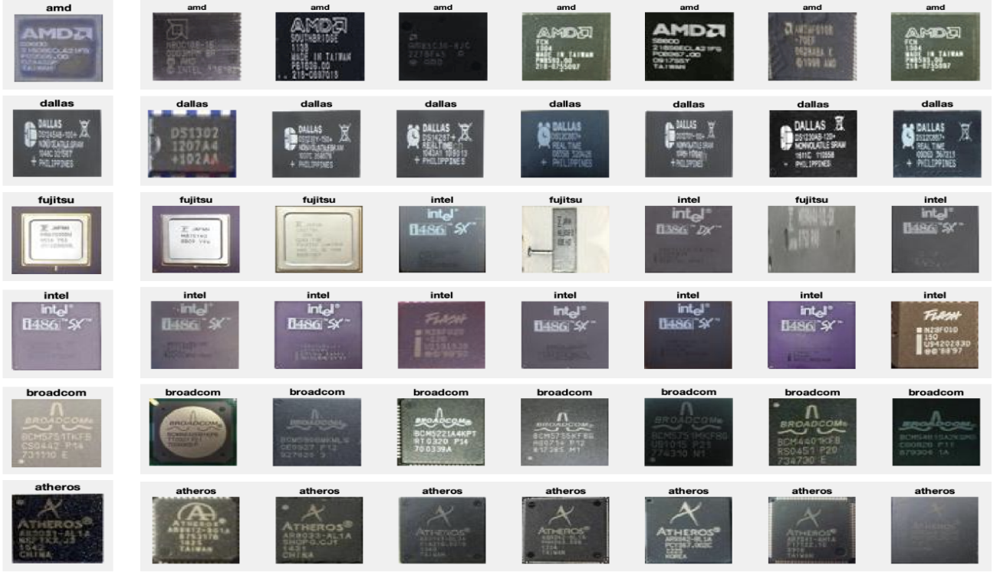
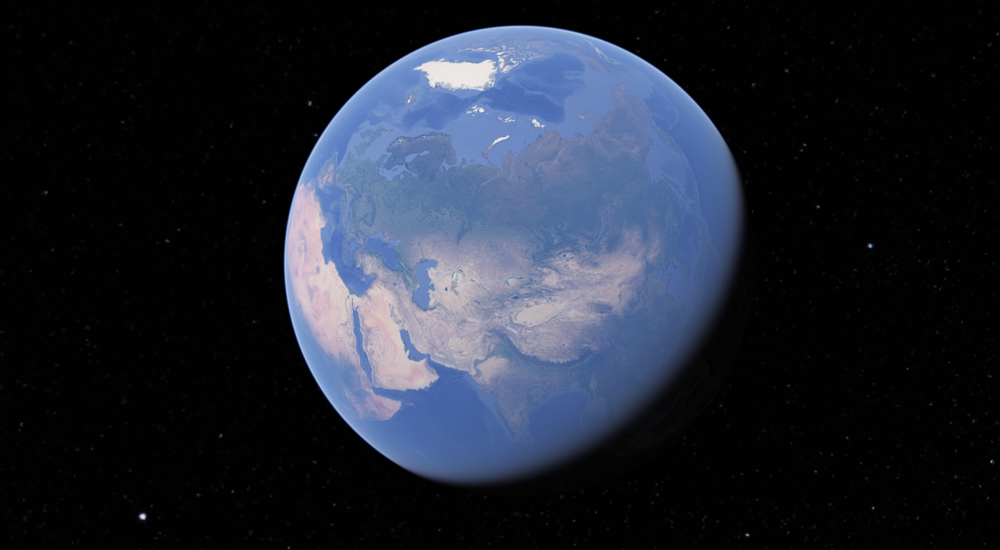
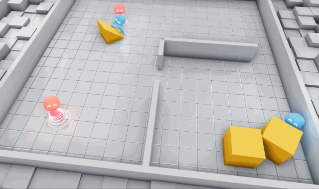

Image Processing and Annotation Pipeline

Computer Vision research initiative focused on image detection, object detection, and semantic segmentation, resulting in the development of a sophisticated fine-grain annotation tool using Python. The project incorporated algorithms for contour detection, polygon approximation, and image manipulation, and the research findings were presented at the CCSC in March 2022 in collaboration with Penn State University. The primary goal was to address file format incompatibility in pixel-wise annotation, aiming to assist visually impaired individuals and contribute to advancements in the AI branch of computer vision. The tool, seamlessly integrated with Label Studio, successfully annotates images from scratch with different polygons and refines existing annotations from benchmark datasets with more fine-grained semantic categories, showcasing its significance in improving accessibility and pushing the boundaries of computer vision capabilities. Github
Deep Learning Based Object Grasping for Robots

Directed and spearheaded an innovative research endeavor focused on advancing the field of image segmentation for table-top objects through the application of Graph Neural Networks (GNN). Our comprehensive approach involved the development and meticulous implementation of a cutting-edge deep learning-based object grasping model. This pioneering model exhibited a remarkable 30% enhancement in the success rate of robotic systems' grasping capabilities, underscoring its efficacy in real-world scenarios. In order to fortify the model's performance, rigorous testing and training were conducted using the OCID (Object Clutter Indoor Dataset) and OSD (Object Segmentation Dataset), resulting in a substantial improvement in robustness. The fine-tuning process not only bolstered the model's accuracy but also contributed significantly to a commendable 25% reduction in false positives during object recognition. This multifaceted research initiative not only showcases advancements in image segmentation and object grasping but also underscores the practical implications of our work in bolstering the reliability and precision of robotic systems in complex environments. Github
Revs Restaurant Web Application

Revs is a dining experience with a customized application designed specifically for Rev's Grill. Our mission? To reimagine the point-of-sale system, infusing it with human-centered design principles to simplify order placement and enhance operational efficiency. With a keen focus on integrating client-requested features, such as OAuth authentication and comprehensive manager reports, our solution aimed to redefine the status quo. Despite initial challenges grappling with Agile methodology and the Django Framework, we quickly adapted, leveraging tools like Jira and regular stand-up meetings to drive progress. Reflecting on our product, we take pride in its robust features, from the intuitive menu board to its visually appealing design. However, we recognize areas ripe for improvement, notably in order functionality and database flexibility. Looking ahead, we remain steadfast in our commitment to refinement, prioritizing rigorous testing and embracing a culture of continuous enhancement to deliver even greater value in our next iteration. Github
Chip Visualization
This project presents a Python-based image similarity identification system, leveraging deep neural networks and the Euclidean distance matrix to streamline the process of finding the top 7 matching images. Utilizing datasets and models such as VGG, ResNet50, and AlexNet, the program incorporates advanced techniques to increase accuracy in image similarity calculations. The significance of image similarity is elucidated, emphasizing the compression of data through deep neural networking for efficient comparison. Cosine similarity emerges as a pivotal measure, mapping angles to intuitive values and offering a comprehensive evaluation of visual and semantic likeness. The report also highlights the intricate dimensions involved in image similarity, elucidating the collaborative training of an encoder and classifier for clustering known manufacturers in an N-dimensional space. The project utilizes a variety of libraries, including Scipy.io, NumPy, PIL, Matplotlib, and more, showcasing a comprehensive and versatile approach to image analysis. Github
Hack Harvard: Globe Climate News
The project, named findEarth, is an innovative and interactive globe designed to provide users with current, curated, and summarized news specifically centered around climate change and tailored to locations of individual interest. The frontend of the application dynamically tracks the user's finger movements on the screen, sending the corresponding geo-location data to the backend. The backend, set up in a Spring Boot environment, orchestrates a sequence of operations that involve querying the newsapi.org API to aggregate global news. Leveraging location-based intelligent search, the system identifies the top 20 most relevant articles, which are further refined through the application of OpenAI's GPT. The backend logic encompasses querying, mapping responses, and utilizing teammate-developed API calls to interact with GPT 3.5, instructing it to choose the most pertinent article URL from the newsapi.org results. The selected article is then downloaded, summarized, and promptly presented to the user, allowing them to focus on the climate change news that matters most to them. This seamless integration of front-end and back-end technologies showcases a sophisticated approach to delivering personalized and impactful information on a global scale. Github
Connect-Four
Connect Four is a class project that delves into JavaFX, creating a game akin to Tic-Tac-Toe but requiring a minimum of 4 items in a line for victory. The GUI application compiles and runs, featuring a correctly dimensioned Connect Four board. In single-player mode, the game displays the winner upon successful completion. The random AI introduces unpredictability by placing chips in any column, utilizing a "shadow" data structure stored in a 2D array for efficient data collection. The game, focuses on simplicity and attractiveness. User-friendly aspects include easily locatable buttons, warnings for erroneous moves, and a reset mechanism. The object-oriented design incorporates classes such as "Shadow Data," AI, Log (File IO), and GameBoard, ensuring thoughtful AI strategies, efficient data management, and features like clicking on any spot on the board and a load/save functionality based on recorded moves. Github